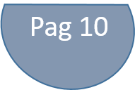
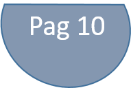

Referencias
- IMG/Everlast.png https://cdn.shopify.com/s/files/1/0914/7760/products/Rocketbook_Everlast_Lettersize_1024x1024.jpg?v=1495752625
- IMG/Wave.png https://cdn.shopify.com/s/files/1/0914/7760/products/Rocketbook_Wave_Standard_1024x1024.jpg?v=1493847381
- IMG/CVH.png https://www.cvh.edu.mx/wp-content/uploads/2015/12/cropped-cvh_deportes-180x180.png
- IMG/Arbol.png https://cdn.pixabay.com/photo/2017/01/31/22/47/nature-2027899_1280.png
- IMG/Logo.jpg http://is1.mzstatic.com/image/thumb/Purple128/v4/47/75/64/477564eb-c5cf-6d9d-011e-825db8e47645/source/175x175bb.jpg
- IMG/Pilot.png https://goo.gl/G97rG2
- IMG/AppGIF.gif https://cdn.shopify.com/s/files/1/0914/7760/files/How_to_use_Rocketbook_app-animation1.gif?14236245964013401806
- IMG/UtilesReUtiles.png https://www.gob.mx/cms/uploads/article/main_image/38524/post_utiles-4.jpg
- Debaye, M. (22 de octubre de 2014). Escuelas verdes: escuelas sustentables. Recuperado el 20 de octubre de 2017, de Curiosidades: http://www.marthadebayle.com/v2/radio/escuelas-verdes-escuelas-sustentables/
- Greenpeace. (s.f.). La deforestación y sus causas. Obtenido de Greenpeace: http://www.greenpeace.org/mexico/es/Campanas/Bosques/La-deforestacion-y-sus-causas/
- Papelería. (18 de octubre de 2017). ¿Qué productos se pueden agregar al inventario? (P. Banzo, Entrevistador)
- Rocketbook. (2017). Rocketbook Everlast. Recuperado el 20 de octubre de 2017, de Rocketbook: https://getrocketbook.com/products/everlast-rocketbook
- Rocketbook. (2017). Rocketbook Wave. Recuperado el 20 de octubre de 2017, de Rocketbook: https://getrocketbook.com/collections/all-products/products/rocketbook-wave
- ROMERO, S. A. (24 de octubre de 2016). Escuelas verdes, una apuesta sustentable. Obtenido de Excelsior: http://www.excelsior.com.mx/nacional/2016/10/24/1124088
- Secretaría de Educación Pública. (29 de junio de 2017). ¿Qué harás con tus libros y cuadernos cuando acabe el ciclo escolar? Aquí te decimos qué hacer con ellos. Recuperado el 20 de octubre de 2017, de GobMx:
- https://www.gob.mx/sep/articulos/que-haras-con-tus-libros-y-cuadernos-cuando-acabe-el-ciclo-escolar-aqui-te-decimos-que-hacer-con-ellos?idiom=es
- SEMARNAT. (s.f.). Escuela Verde: Certi cación Ambiental de Escuelas. Recuperado el 20 de octubre de 2017, de Guía: http://189.208.102.74/u094/m-sitios/academicos/teresita/articulos/Guia-y-anexo-EscuelaVerde.pdf
- Toepfer, K. (1 de Enero de 2005). Papel y medio ambiente. Obtenido de Ecologistas en acción: http://www.ecologistasenaccion.org/article14645.html#nb2-2
- Vásquez, X. (s.f.). Escuelas verdes en México ¿hay certificación? Recuperado el 20 de octubre de 2017, de CCEEA: https://cceea.mx/sustentabilidad/escuelas-verdes-en-mexico-hay-certificacion/
{kind=link}
{kind=link}
{kind=link}
{kind=link}
{kind=link}
{kind=link}
{kind=link}
{kind=link}